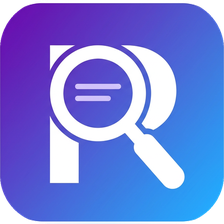

RimotekaPreko 279.000 reči, na vrhu one sa istim brojem slogova, jer one najlakše legnu u stih. Uz svaku reč odmah piše i šta znači.
U pisanju pesama rime dolaze same, do stiha u kom kucaš. Klik i reč je u stihu. Ne otvaraš drugu stranu, ne gubiš misao.
Pored svakog stiha stoji broj slogova i slovo šeme rime, a obojene reči pokazuju šta se s kim rimuje. Golim okom vidiš da li se pesma sklapa.
Rimoteka je besplatan alat za rimovanje reči i rečnik rima na srpskom jeziku. Upiši reč i odmah dobiješ sve reči koje se rimuju sa njom, na vrhu one sa istim brojem slogova. Rečnik pokriva ceo srpski jezik, a uz svaku reč ide objašnjenje, pa vidiš i šta reč znači pre nego što je staviš u stih.
Rimoteka nije samo rečnik rima, u njoj se pesma i piše. Otvoriš pisanje pesama i kucaš: pored svakog stiha odmah stoji broj slogova, slovo šeme rime (ABAB, AABB, ABBA), a reči koje se rimuju obojene su istom bojom.
A ono najvažnije: rime dolaze same. Klikneš na bilo koju reč u svom stihu i sa strane se pojave sve reči koje se sa njom rimuju; klik na rimu ubacuje je pravo u stih. Ne prekidaš pisanje, ne otvaraš drugu stranicu, ne gubiš misao. Ako ti rima ne odgovara po smislu, tu su sinonimi; ako ti ritam ne štima, uključiš metar.
Kad je pesma gotova: odštampaš je ili sačuvaš kao PDF, preuzmeš kao tekstualni fajl ili podeliš linkom. Tekst se sam čuva na tvom uređaju. Sve besplatno i bez registracije.
Kad ti treba samo mera, tu je poseban brojač slogova i karaktera. Nalepiš tekst i uz svaki red stoji broj slogova, a na dnu ukupan zbir: slogovi, reči i znakovi, sa razmacima i bez njih. Radi i za jednu reč i za celu pesmu, na računaru i na telefonu.
Kad ti rima ne odgovara po smislu, tu su sinonimi; kad ti treba slobodniji zvuk, tu su bliske rime; kad pišeš za decu, dečji režim ostavlja samo primerene reči. Kako su rimu gradili veliki pesnici vidi kod klasika, a ako hoćeš da je uvežbaš, tu je igra rimovanja. Rimoteka radi na latinici i ćirilici, na ekavici i ijekavici.
Kako da pronađem rime za neku reč? Upiši reč u polje i klikni „Nađi rime“. Na vrhu su rime sa istim brojem slogova, a možeš i da filtriraš po broju slogova.
Da li je Rimoteka besplatna? Da, potpuno. Rečnik rima, brojač slogova i pisanje pesama su besplatni, bez registracije.
Kako se broje slogovi? Reč ima onoliko slogova koliko ima samoglasnika, uz slogotvorno „r“ (prst, vrt). Brojač to radi sam, red po red.
Kakve rime pronalazi? Čiste, dobre i šire (asonantne) rime. Sve vrste su objašnjene na strani vrste rima.